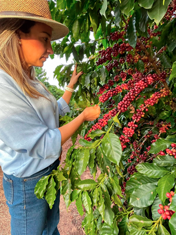
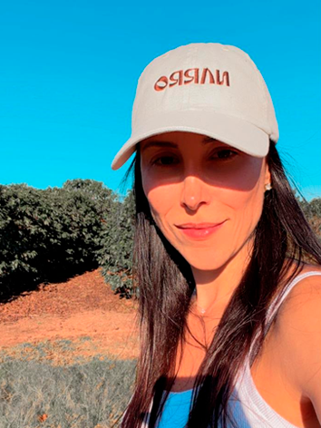
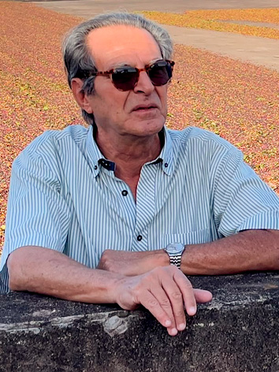
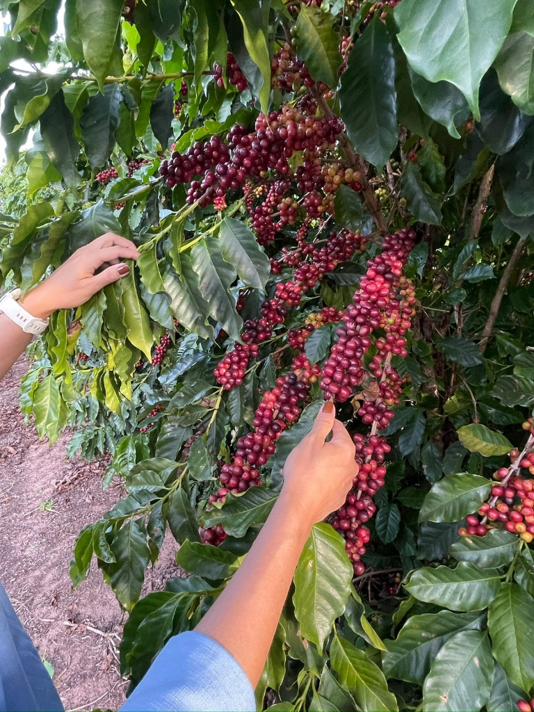
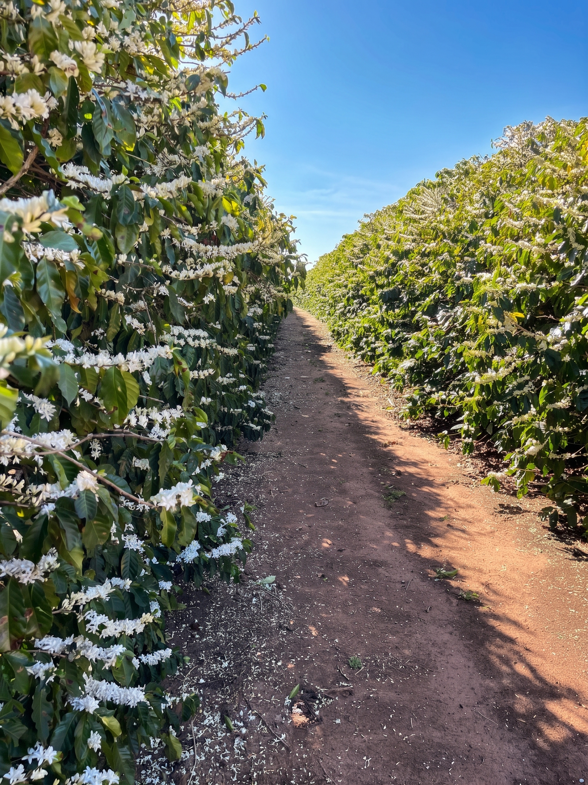
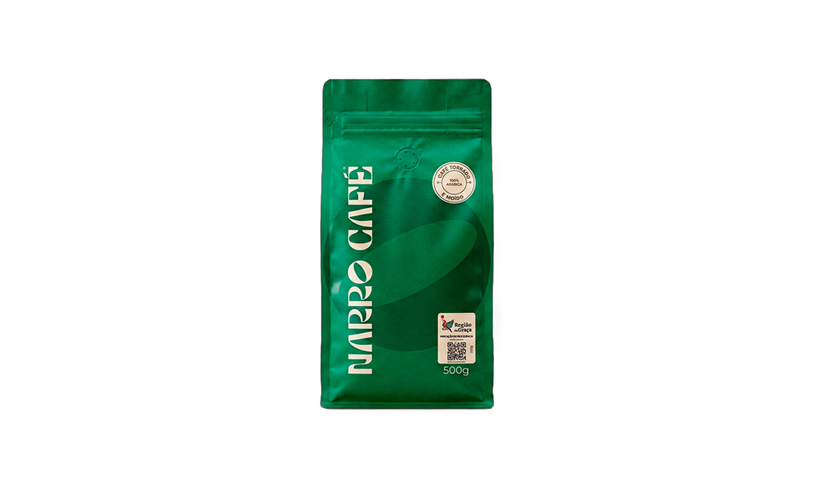
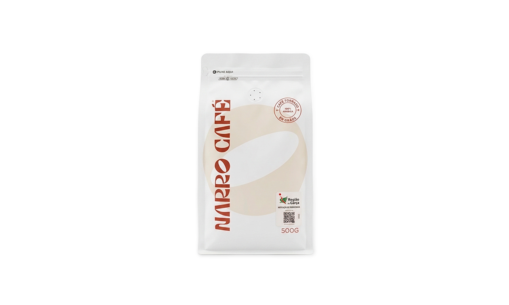

Cada grão conta uma história. Cada xícara, um convite.
A Narro une a tradição de três gerações na região de Garça, SP, ao cuidado e à precisão dos cafés especiais. Mais do que uma bebida, nosso café conecta você à origem, à família e à terra; do produtor diretamente para a sua xícara.

O encontro de três pilares
Origem e terroir
Produzido na Fazenda Santa Luzia, na região de Garça, SP, com indicação geográfica reconhecida. Esse terroir favorece a doçura natural e a acidez equilibrada que caracterizam nossos cafés.
Qualidade especial
Grãos 100% arábica cultivados a 750 metros de altitude. Selecionados lote a lote e avaliados segundo os protocolos da Specialty Coffee Association (SCA), alcançam pontuações que os classificam como cafés especiais.
Legado e família
Narro vem do latim narrare: narrar, contar, descrever. É a expressão de uma história familiar que, desde 1929, transforma o trabalho na terra em poesia, unindo o pioneirismo de Carlos, a experiência e a dedicação de Luiz Carlos e a paixão de Lara e Bruna.
O Legado Familiar
Em 1929, Carlos Baracat chegou ao Brasil trazendo consigo apenas sua história e seus sonhos. Quase cem anos depois, Lara e Bruna recebem de seu pai, Luiz Carlos Baracat, a missão de escrever um novo capítulo da trajetória iniciada pelo avô Carlos. Guiadas pelo chamado de suas raízes, transformam esse legado familiar em uma marca de cafés especiais.
A Inspiração & Raízes
A Narro nasceu das viagens às escondidas que Lara fazia, ainda criança, na caminhonete do pai rumo à Fazenda Santa Luzia; das reuniões nos escritórios de São Paulo, onde um bom café sempre fazia falta; e da pandemia, que reconduziu Bruna às suas origens.
Tradição & Aperfeiçoamento
Sob o olhar experiente de Luiz Carlos Baracat, que herdou e aperfeiçoou o cultivo na Fazenda Santa Luzia, a tradição familiar ganhou um novo significado e aproximou gerações em torno da arte de ouvir a terra.
O Propósito na Xícara
Nosso propósito é levar à sua xícara a autenticidade de um cultivo construído ao longo de quase um século. Em cada grão vive o legado de gerações, que se revela na xícara e convida você a fazer parte dessa história.



A arte de ouvir a terra
Ciclos Naturais & Sabedoria
Na Fazenda Santa Luzia, respeitamos os ciclos naturais do cafezal e o conhecimento acumulado ao longo de quase um século de história familiar. Unimos o rigor da técnica moderna ao cuidado artesanal.
Manejo & Rastreabilidade de Origem
Do manejo sustentável do solo à secagem seletiva e à torra precisa, cada etapa é acompanhada de perto por Lara e Bruna, para que as melhores características de cada lote se revelem na sua bebida.


Cafés especiais 100% arábica
Grãos cultivados com cuidado na Fazenda Santa Luzia, na região de Garça, SP. Conheça nossos lotes e escolha o perfil que melhor acompanha o seu ritual de preparo.

Café Torrado e Moído
Ideal para coadores de papel, prensa francesa e cafeteiras tradicionais. Embalagem stand-up pouch soft touch com zíper e válvula para máxima conservação de aroma e sabor.

Café Torrado em Grãos
Para quem preserva o ritual de moer os grãos no momento da extração. Embalagem stand-up pouch soft touch com zíper e válvula para proteger a qualidade do lote especial.
Faça parte da nossa história
O que nossos clientes estão dizendo
Tomei seu café hoje. Que cheiro... que sabor! Não sou bebedora de café, mas realmente a diferença é nítida. Amei!
O café é maravilhoso, nota 10! Aroma, sabor, show! Café viciante, quando vê já acabou. A embalagem também está impecável, capricharam demais na qualidade e na apresentação. Vão voar com o Narro Café!
Nossa, sério! Eu dou mil pontos para esse café, de verdade. É um espetáculo de sabor e aroma. Amei demais!
Espetáculo de café, simplesmente delicioso. Parabéns pelo cuidado com cada detalhe, desde o grão até a entrega.
Acompanhe o dia a dia da Fazenda Santa Luzia e novidades da nossa colheita em @narrocafeoficial